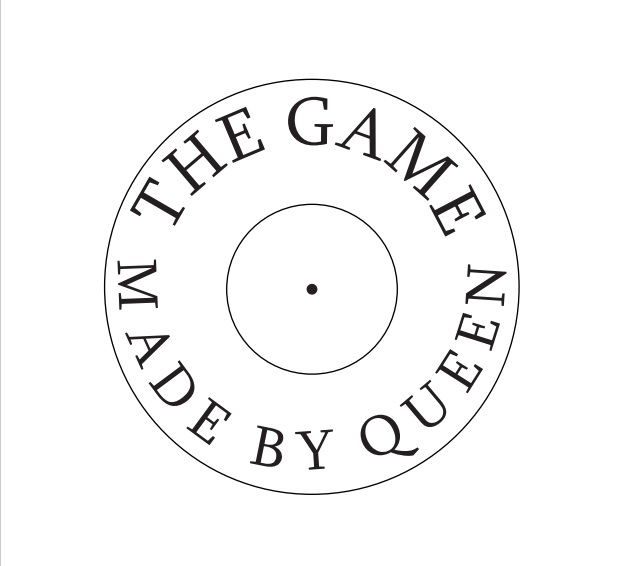

Play The Game Made by Queen
На протяжении своей жизни я всегда задавалась вопросом: как мне совместить свои две любимые страсти - книги и музыку? Мне кажется, что создание этого зина стало явным свидетельством того, что это возможно и даже необходимо. "The Game made by Queen" - это один из моих первых проектов, но до сих пор один из самых любимых. Когда мы были на втором курсе колледжа, нам поставили задачу создать зин на тему игр. У меня было множество идей, но когда я перебирала свою коллекцию виниловых пластинок, я наткнулась на альбом группы Queen под названием "The Game". Это вдохновило меня предложить идею сделать зин, основанный на песнях этого альбома, моей преподавательнице. Она одобрила идею и поддержала нас в этом творческом начинании. Дизайн зина был выполнен в цветах, отсылающих к другому альбому группы Queen - "Hot Space".
- Уникальный и творческий подход: зин представляет собой нечто большее, чем просто сборник песен. Он предлагает уникальный взгляд на альбом и его смысл через объединение текстов песен, идей и эстетики.
- Интеллектуальная ценность: зин может содержать дополнительные материалы, анализ и интерпретацию песен, что добавляет в него глубину и интеллектуальную ценность для поклонников музыки и изучающих творчество Queen.
- Эстетическое оформление: зин в формате альбома представляет собой не только сборник текстов, но и эстетическое произведение искусства, которое может быть оценено как фанатами группы, так и любителями оригинальных и творческих подходов к музыкальной литературе.